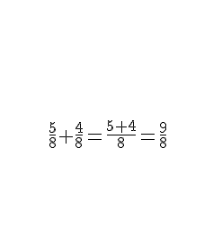

Operações com Frações
O que é uma fração?
Chama-se fração qualquer numero expresso na forma a:b. Onde a é o nosso numerador e representa a quantidade que temos em relação ao todo, já b se chama denominador e representa em quantas partes o todo foi dividido. Ou seja, fração nada mais é que uma divisão.
Outra forma de reseprentar uma fração é por meio de uma pizza, imagine que as fatias sao nosso numerador e que a quantidade que temos de fatia e o nosso numerador
Soma e Subtração
Para resolver adição ou subtração de frações, é preciso prestar atenção nos denominadores, pois há duas maneira de resolvermos esse problema.
1. Caso: Denominadores iguais
Quando temos denominadores iguais, é bem fácil, mantemos o denominador e fazemos a operacao apenas com o numerador. Veja o exemplo a seguir
2. Caso: Denominadores diferentes
Quando nossos denominadores sao diferentes precisamos tirar o MMC. que nada mais é do que uma forma de igualar nossos denominadores.
Agora que temos o valor do mmc, dividimos o denominador de ambas frações e multiplicamos o resultado pelo numerador. Veja abaixo
Multiplicação
Para resolver Multiplicação entre frações, multiplicamos os numeradores e os denominadores
Veja o exemplo abaixo
Divisão
Para calcularmos o valor da divisão entre duas frações ou mais, mantemos a primeira e multiplicamos pelo inverso da segunda, veja como é simples